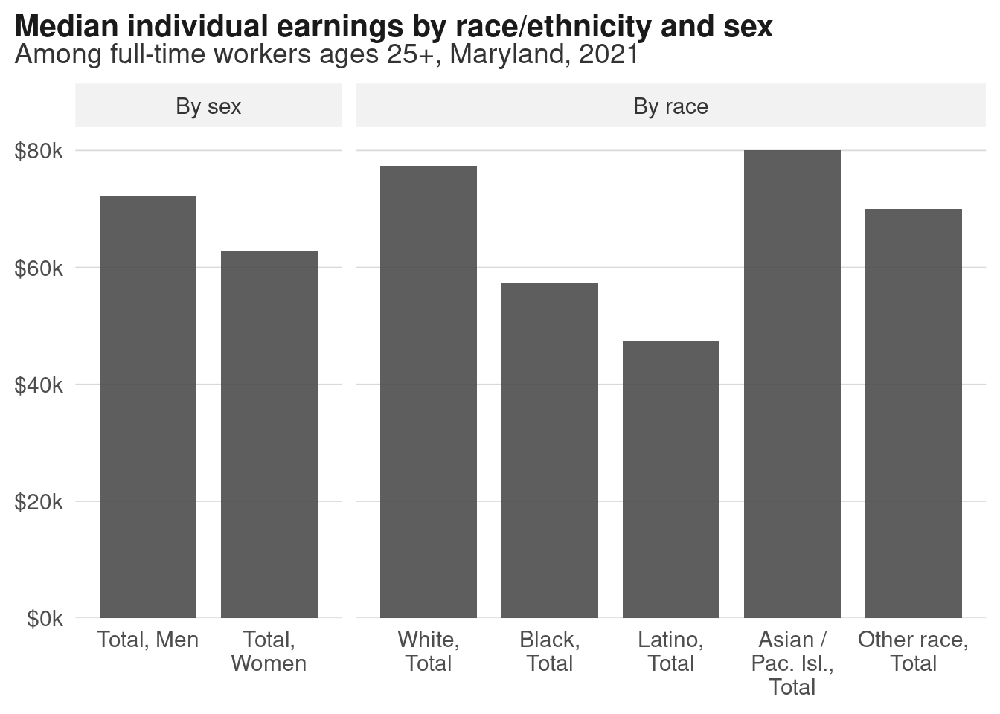
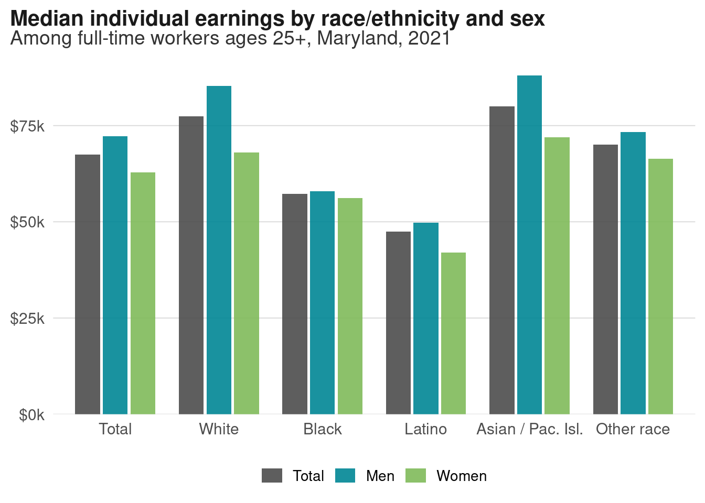
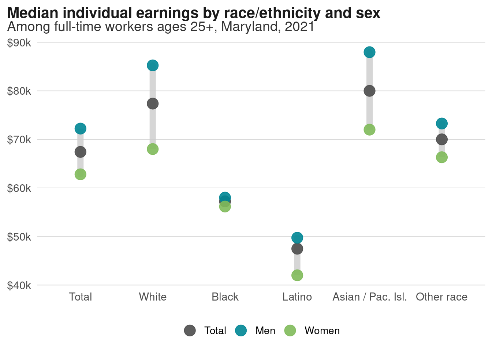
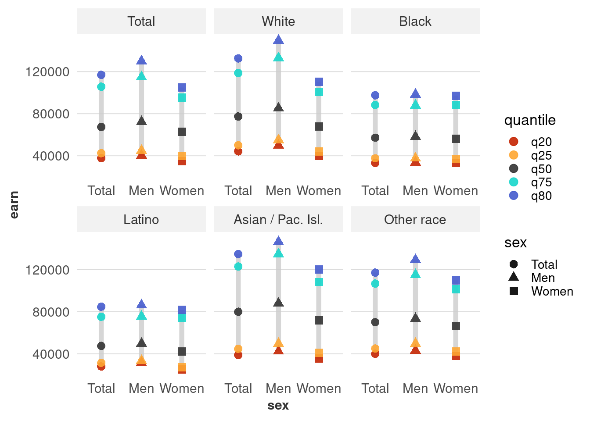
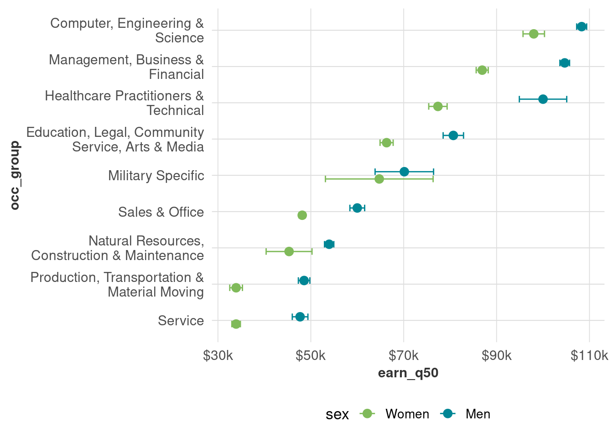
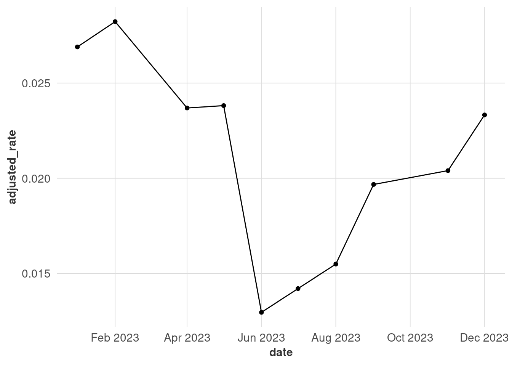
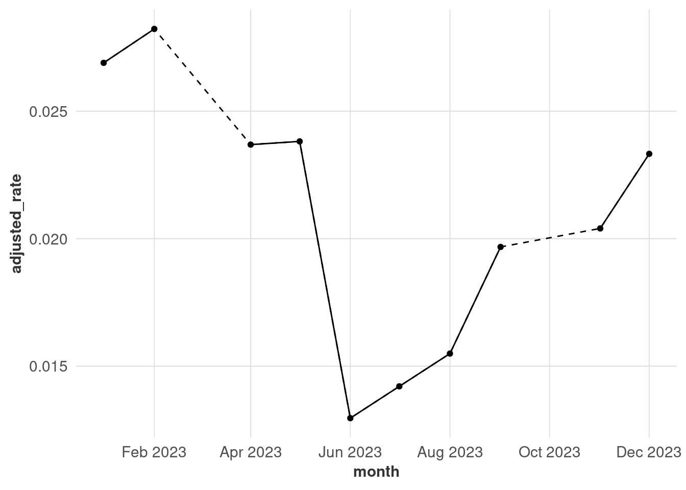

8. Uncertainty and distributions
Warm up
Fill in this quick survey about probability:
Distributions
When we visualize data, one of the most important decisions we make is what values exactly we’ll display. That’s because you usually can’t include every data point, so you’ll have to do some amount of summarizing. However, that means you’re losing a lot of information in the process. That’s a fine line you need to figure out how to walk, and like most things we’ve done so far, how you do that will depend on context, audience, and purpose. In my own work, I know I fall on the side of oversimplifying more often than I should.
The problem is that unless people have a background in statistics or other quantitative research-heavy fields, they probably aren’t used to hearing about ranges of data—let alone ways to describe distributions, like skew and kurtosis. So the chart types that are best for showing distributions or uncertainty are generally pretty technical.
For example, look at the range of median household incomes by county:
There’s already a wide range, but compare that to all their tracts:
Of the counties in the Baltimore metro area, Howard County has a much higher overall median income than Baltimore city, yet there’s also a lot of overlapping values. Baltimore city has several tracts with pretty high incomes, but that fact gets washed out when we only look at summary values. Even just look at how different the income scales are!
Think back to the wage gap data. When we just look at wages for men vs women, 1 we lose differences within and between those groups. Before we saw how median earnings increase with educational attainment, but women’s pay lags about one education level behind men’s pay. We’ll see other gaps when we look at earnings by sex and race/ethnicity.
1 Speaking of distributions within data, there are gray areas in gender that aren’t captured by the Census.

Side-by-side bars of race versus sex show much more of the range. When we talk about the wage gap as just men vs women, we miss the fact that white women have higher median earnings than Black or Latino men! 2
2 We also miss gaps within those groups, such as disparities by ethnicity, origin, and immigration status. An intern I worked with a few years ago made this video looking at the wage gaps within Asian American groups.

Unlike bars, dots don’t have to start at a 0 baseline, so we can zoom in on the actual range of the values. This view makes it easier to see that the gaps within white and Asian/Pacific Islander communities span about $20,000 each, but is nearly nonexistent for Black adults. (For charts like this, you’ll more often see the axes flipped and the groups ordered largest to smallest, or largest gap to smallest gap, but I’ll let you figure that out—take a look at forcats::fct_reorder.)

Exercise
Just like we can disaggregate the data into race vs sex, we can also tease apart the distributions within those groups. The wage gap data has not just medians, but also 20th, 25th, 75th, and 80th percentile values for every group.
Here’s a bad chart of this data that just dumps all the data into a bunch of points. Looking at the examples from Yau (2013) (on Blackboard), brainstorm some better ways to show this data, including what you would want to filter out.
Yau, N. (2013). Data points: Visualization that means something. John Wiley & Sons, Inc.
# reshape to long in order to make dot plot
wages_quants <- wages_sex_race |>
select(dimension, sex, race_eth, matches("earn_q\\d+")) |>
tidyr::pivot_longer(cols = earn_q20:earn_q80, names_to = c(".value", "quantile"),
names_pattern = "(^[a-z]+)_(.+$)",
names_ptypes = list(quantile = factor()))
# diverging-ish palette is appropriate here, so I'll pull it to modify
# diverging pals usually have a light color in the middle, which won't work well for points
# div_pal <- RColorBrewer::brewer.pal(n = 5, name = "Spectral")
div_pal <- viridisLite::turbo(n = 5, direction = -1, begin = 0.1, end = 0.9)
div_pal[3] <- "gray20"
wages_quants |>
ggplot(aes(x = sex, y = earn, color = quantile, shape = sex, group = sex)) +
geom_path(color = "gray80", linewidth = 2, alpha = 0.8) +
geom_point(size = 3, alpha = 0.9) +
scale_color_manual(values = div_pal) +
facet_wrap(vars(race_eth), scales = "free_x")
Here’s one option, although I’m not super satisfied with it:
Uncertainty
It can be really hard to imagine or estimate uncertainty. We expect data to be exact, and it pretty much never is. Visualization can help explain this to people, but that can conflict with our usual desire to make our visualizations simple and quick to read. In fact, I dropped all the margins of error from the datasets in the justviz package when I made it, so I’m part of the problem.
Wilke’s chapter on uncertainty has some good examples of how to show uncertainty in terms of margin of error in a few different types of charts. At the same time, there are some arguments against using error bars like he’s done in some of the examples. One of the case study readings (Correll & Gleicher (2014)) finds that these can actually harm people’s ability to understand uncertainty.
Correll, M., & Gleicher, M. (2014). Error Bars Considered Harmful: Exploring Alternate Encodings for Mean and Error. IEEE Transactions on Visualization and Computer Graphics, 20(12), 2142–2151. https://doi.org/10.1109/TVCG.2014.2346298
Probably the most famous and famously controversial attempt at visualizing uncertainty was the gauge chart the New York Times used on election night 2016. It was meant to show that the vote margins were in flux as counts came in, but the jittering effect was actually hard-coded into the visualization rather than based directly on tallies updating. People got extremely stressed and mad.
For working in ggplot, the ggdist package (Kay (2024)) has some good options for showing distributions and uncertainty. 3
Kay, M. (2024). Mjskay/ggdist. https://github.com/mjskay/ggdist
3 ggdist::geom_dots or ggdist::geom_interval and its arguments could make a good replacement for the boxplot of median income above.
4 I can never define margin of error properly, but here’s a good overview.
To make up for dropping margins of error before, I made a new dataset that we’ll use here. It’s the same wages data by sex, education, and occupation group, and it includes margins of error at both the 90% and 95% confidence levels. 4 When I analyzed the wage data, it came from a subset of the ACS, so a sample of a sample. With survey data like this, you have to worry about having large enough sample sizes to get reliable estimates. So far we’ve used fairly large groups (women in Maryland with bachelor’s degrees, etc), but when we slice the data more, we start to get less reliable estimates.
For example, calculating median income of women in military occupations by education leaves us with some very small sample sizes, and some very large MOEs. Rule of thumb is usually that you need at least 30 observations in your sample for estimates to be useful; you might also want to set a minimum number of estimated counts.
wages_moe <- readRDS(here::here("inputs/wages_sex_edu_occ.rds")) |>
mutate(occ_group = forcats::as_factor(occ_group) |>
forcats::fct_relabel(stringr::str_replace, ",? \\band\\b", " &")) |>
mutate(lower_95 = earn_q50 - moe_95,
lower_90 = earn_q50 - moe_90,
upper_90 = earn_q50 + moe_90,
upper_95 = earn_q50 + moe_95)
wages_moe |>
filter(sex == "Women",
occ_group == "Military Specific") |>
select(6:12)| edu | count | sample_n | earn_q50 | se | moe_90 | moe_95 |
|---|---|---|---|---|---|---|
| Total | 2002 | 92 | 64738 | 5916 | 9731 | 11595 |
| High school or less | 182 | 14 | 34600 | 17175 | 28250 | 33662 |
| Some college or AA | 732 | 28 | 63586 | 11043 | 18164 | 21644 |
| Bachelors | 558 | 27 | 62580 | 4182 | 6879 | 8197 |
| Graduate degree | 530 | 23 | 85000 | 15611 | 25678 | 30597 |
Reporting that estimate for women in military occupations with a graduate degree would be silly: $85k ± $30k means that at a 95% confidence level, you’ve estimated the median to be between $55k and $115k, which tells you virtually nothing.
Error bars are one simple way to show the MOE. When we don’t split things up by education, and we look statewide, the MOEs aren’t so bad for most occupational groups (note which ones are pretty big, and for which genders).

Once we split by education, however, we get wider margins. Note also that we still have pretty wide distributions within occupation: what’s the difference between a healthcare job someone with a graduate degree has and one someone with at most a high school degree?
Another thing to know about margins of error is that they can be used as a kind of crude approximation of statistical testing (t-tests, etc). For example, the margins of error for people with graduate degrees in production occupations overlap, so we shouldn’t say they differ by sex until we do formal testing. For service jobs, however, the MOEs don’t overlap, so that’s a safer bet (but not a replacement for tests of statistical significance).
Missing data
There’s a lot of different reasons data might be missing, and different ways to handle it. Here’s just one tidbit to handle those small samples from the wage data that you’re likely to encounter.
# I'll use a few metrics to decide which observations to keep:
# coefficient of variance (MOE / estimate) needs to be less than 0.3, based on 95% CI
# sample size needs to be at least 50
wages_sample_size <- wages_moe |>
mutate(cov = moe_95 / earn_q50) |>
filter(sex != "Total",
edu == "Graduate degree") |>
mutate(too_small = sample_n < 50 | cov > 0.3) |>
select(sex, occ_group, earn_q50, too_small)
wages_sample_size |>
filter(too_small)| sex | occ_group | earn_q50 | too_small |
|---|---|---|---|
| Women | Military Specific | 85000 | TRUE |
| Women | Natural Resources, Construction & Maintenance | 95378 | TRUE |
If we drop those unreliable values, or have a similar dataset with missing values, we’ll get something like this:
wages_sample_size |>
filter(!too_small) |>
ggplot(aes(x = occ_group, y = earn_q50, fill = sex)) +
geom_col(width = 0.8, position = position_dodge2()) +
coord_flip() +
scale_x_discrete(labels = scales::label_wrap(30)) +
scale_y_continuous(labels = dollar_k) +
scale_fill_manual(values = gender_pal) +
theme(panel.grid.major.x = element_line())
Dodged bars will fill up the available space by default. Instead, use preserve = "single" inside position_dodge.
wages_sample_size |>
filter(!too_small) |>
ggplot(aes(x = occ_group, y = earn_q50, fill = sex, group = sex)) +
geom_col(width = 0.8, position = position_dodge2(preserve = "single")) +
coord_flip() +
scale_x_discrete(labels = scales::label_wrap(30)) +
scale_y_continuous(labels = dollar_k) +
scale_fill_manual(values = gender_pal) +
theme(panel.grid.major.x = element_line())With time series data, you can usually assume the intervals are even (every month, every week, etc.). If it’s not for whatever reason, you might want to add some visual cues for transparency. This is a forced example where I drop some observations from the unemployment data.
There are 2 months missing here, but you can’t tell because the lines get connected regardless of discontinuities. Adding points makes it clearer when observations were made, although this might not work when you have a lot of points (that’s why I’m only using one year for this example).

In a lot of cases, that will be enough. If you need more accuracy, you might convert the data into a time series (I like the tsibble package because it works well with dplyr) and fill in missing observations. This also gives you options of imputing the missing values, but it’s outside the scope of this class.
# install the tsibble library if you need to
library(tsibble)
# fill_gaps adds explicitly missing observations in place of missing values,
# in this case monthly
# this isn't the best way to hack this chart together but it's the easiest
unemp_ts <- unemp_missing |>
mutate(month = yearmonth(date)) |>
as_tsibble(key = name, index = month) |>
fill_gaps() |>
as_tibble() |>
mutate(month = lubridate::ym(month))
unemp_ts |>
ggplot(aes(x = month, y = adjusted_rate)) +
geom_line(aes(x = date), linetype = "dashed") +
geom_line() +
geom_point() +
scale_x_date(date_breaks = "2 months", date_labels = "%b %Y") +
theme(panel.grid.major.x = element_line())